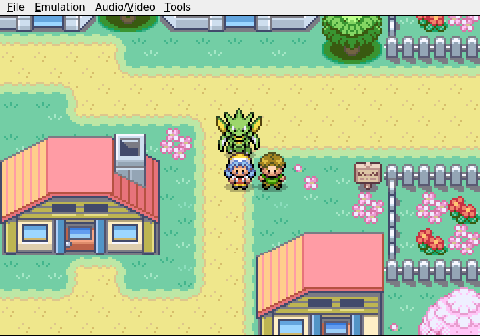

Gemini plays Pokemon Heart & Soul, Run 2
Latest


 funnyThe Scenic Route
funnyThe Scenic RouteTrying to find a building in a straight line proves to be the hardest boss yet.



funnyThe Revolving DoorYou can lead an AI to a Pokémon Center, but you can't make it heal.